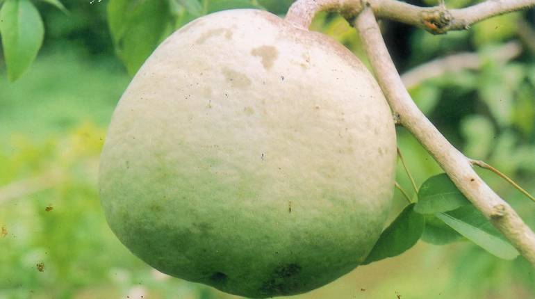

1.ถั่วดินโคก

สรรพคุณ : ช่วยลดไข้ในเด็ก ใช้ต้มกับน้ำดื่มเป็นยาบำรุงน้ำนมของสตรี และใบนำมาฝนทาเป็นยาแก้ฝี
1.ถั่วดินโคก
สรรพคุณ : ช่วยลดไข้ในเด็ก ใช้ต้มกับน้ำดื่มเป็นยาบำรุงน้ำนมของสตรี และใบนำมาฝนทาเป็นยาแก้ฝี
2.เทพทาโร

สรรพคุณ : แก้ไข้หวัด แก้ไอ อาการไอเรื้อรัง ตัวร้อน ออกหัด เนื้อไม้ใช้ปรุงเป็นยาหอมลม รักษาท้องขึ้น อืดเฟ้อ จุกเสียด
3.มะตูมนิ่ม
สรรพคุณ : คนโบราณจะนำมาทำเป็นยาอายุวัฒนะ เพื่อบำรุงกำลัง บำรุงเพศ ชลอความแก่ ทำให้ผมหงอกช้า โดยการนำมาสผมกับกล้วยน้ำไทและน้ำผึ้ง ปั้นเป็นลูกกอนรับประทาน เรียกตำรับยานี้ว่า “ลูกแปลกแม่”
4.มะหาด

สรรพคุณ : แก่นมีสรรพคุณเป็นยาแก้ลม เปลือกต้นสดนำมาต้มกับน้ำกินเป็นยาแก้ไข้
5.เร่ว

สรรพคุณ : ช่วยแก้อาการหืด,ไอ,คลื่นไส้อาเจียน รับประทานอาหารไม่ได้ ผลช่วยแก้เสมหะในลำคอ เมล็ดช่วยกัดเสมหะ
6.หัวร้อยรู

สรรพคุณ : ช่วยบำรุงหัวใจ หัว ใช้ตำกินเป็นยาขับพยาธิ
7.กระทุ่มนา

สรรพคุณ : ช่วยลดความดันโลหิต ใบและเปลือกต้นต้มกินเป็นยาแก้ไข้ ใช้อมกลั้วคอแก้อาการอักเสบของเยื่อเมือกในปาก
8.ขันทองพยาบาท

สรรพคุณ :ใช้เป็นยาบำรุงเหงือก รักษาเหงือกอักเสบ ทำให้ฟัน เหงือกแข็งแรง ขับระดูร้าย แก้โรคตับ และถอนพิษ
9.จุกโรหินี

สรรพคุณ : ผลนำมาต้มกับน้ำดื่ม จะช่วยลดระดับน้ำตาลในเลือดได้ ช่วยแก้อาการอ่อนเพลีย ช่วยบำรุงกำลัง รากนำมาเคี้ยวกับพลูช่วยแก้อาการไอ
10.ชะเอมไทย

สรรพคุณ : เปลือกต้นใช้ต้มกับน้ำดื่มช่วยแก้อาการไอ หากอาการไม่ดีขึ้นให้รับประทานติดต่อกัน 2-4 วัน ช่วยขับเสมหะ แก้น้ำลายเหนียว
11.ชิงชี่

สรรพคุณ : ใบนำมาต้มดื่มเป็นยาแก้ไข้ รากใช้เป็นยาขับปัสสาวะ ช่วยทำให้มดลูกเข้าอู่
12.ตับเต่า

สรรพคุณ : เปลือกใช้เป็นยารักษาโรครำมะนาด น้ำต้มจากแก่นและรากมีสรรพคุณเป็นยาบำรุงปอด
13.นางแย้มป่า

สรรพคุณ : รากนางแย้มป่าใช้ต้มเป็นยาแก้ไข้ นอกจากนี้ยังช่วยรักษาลำไส้อักเสบ ในตำรายาไทยใช้รากเป็นยาช่วยขับปัสสาวะ
14.ปลาไหลเผือก

สรรพคุณ : รากใช้เป็นยาบำรุงกำลัง บำรุงร่างกาย คนเดินป่านิยมกัน เพราะจะช่วยทำให้ร่างกายแข็งแรง ช่วยคลายอาการปวดเมื่อย รากใช้เป็นยาขับพยาธิ
15.พังคิ

สรรพคุณ : รากพังคีช่วยแก้อาการจุกเสียด แก้ท้องอืด ท้องเฟ้อ ปวดท้อง รากใช้ตำประคบแก้อาการปวด
16.มะคังแดง

สรรพคุณ : เนื้อไม้มีรสเย็นเฝื่อน ใช้ต้มกับน้ำดื่มเป็นยาแก้เลือดลมเดินไม่สะดวก แก้พิษโลหิตและน้ำเหลืองเปลือกต้นใช้ตำพอกแผลสดเพื่อห้ามเลือด
17.สะค้าน

สรรพคุณ : เครือ ใช้ประกอบอาหารช่วยเพิ่มรสเผ็ด ลำต้นใช้ใส่แกง ช่วยให้มีกลิ่นหอม
18.สารภิป่า

สรรพคุณ : ดอกมีสรรพคุณเป็นยาบำรุงหัวใจ ตำรายาไทยจะใช้เปลือกและดอกเป็นยาแก้ไข้ ดอกมีสารช่วยขยายหลอดลม และช่วยขับลม เปลือกและดอกมีสรรพคุณเป็นยาแก้บิด
19.อบเชยไทย

สรรพคุณ :เป็นยาร้อนออกฤทธิ์ต่อไต ม้าม และกระเพาะปัสสาวะ ใช้เป็นยาบำรุงร่างกาย ทำให้ร่างกายอบอุ่น ช่วยกระจายความเย็นในร่างกาย ทำให้เลือดหมุนเวียนดี
20.เฉียงพร้านางแอ

สรรพคุณ : ลำต้นใช้ต้มน้ำดื่มช่วยบำรุงร่างกาย ทำให้เจริญอาหารหรือใช้เป็นยาเจริญอาหารสำหรับสตรีหลังคลอดบุตร
21.เถาเอ็นอ่อน

สรรพคุณ : เป็นยาเย็น มีพิษ ออกฤทธิ์ต่อหัวใจและตับ ใช้เป็นยาฟอกเลือด ขับลมในลำไส้และในกระเพาะอาหาร ทำให้ผายลมและเรอ ช่วยแก้อาการจุกเสียดแน่นท้อง
22.เปราะหอม

สรรพคุณ :ใช้เป็นยาแก้ปวดศีรษะ คลายเครียด ใช้เป็นยาบำรุงหัวใจ บำรุงประสาท ด้วยการใช้หัวผสมลงในยาหอม หัวเปราะหอมนำมาต้มหรือชงกิน จะช่วยในการนอนหลับได้เป็นอย่างดี และยังช่วยลดความเครียดได้อีกด้วย